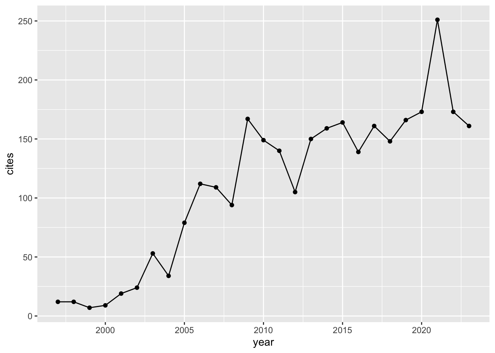
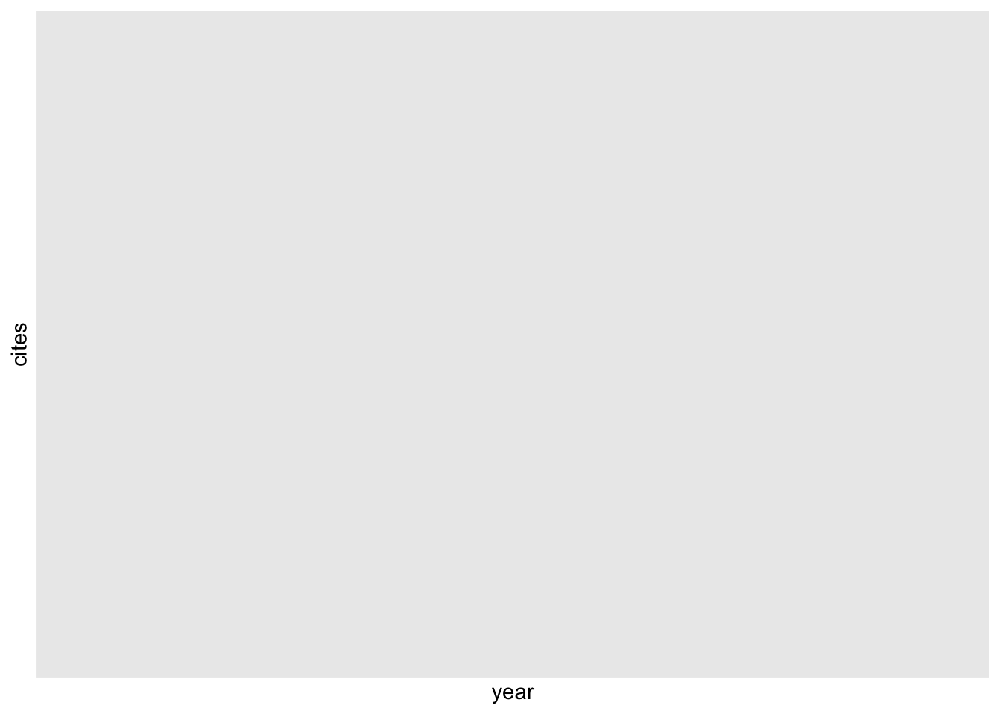

library(scholar)
#https://myaccount.google.com/personal-info?rapt=AEjHL4O7vjj8zGiZ04ukfk_2uyzJ_XzsdGq6U2JOBwwagrf1LAIO7TJYxiWpOR0ybbYMgMm6Uxf5ef2MK-VcOsgSNg-3CbSPXQ
#https://scholar.google.com/citations?user=tnR58sAAAAAJ&hl=en&authuser=1 # RL TREMBLAY
id<-'tnR58sAAAAAJ&hl'
get_profile(id)
## $id
## [1] "tnR58sAAAAAJ&hl"
##
## $name
## [1] "Raymond L Tremblay"
##
## $affiliation
## [1] "University of Puerto Rico"
##
## $total_cites
## [1] 3019
##
## $h_index
## [1] 26
##
## $i10_index
## [1] 48
##
## $fields
## [1] "Orchid Biology" "Conservation Biology" "Orchidaceae"
## [4] "Evolution" "Population Dynamics"
##
## $homepage
## character(0)
##
## $coauthors
## [1] "James D. Ackerman"
## [2] "Elvia Melendez-Ackerman"
## [3] "Jess K. Zimmerman"
## [4] "Maria-Eglee Perez"
## [5] "Benjamin J. Crain"
## [6] "Julissa Rojas-Sandoval"
## [7] "Wilfredo Falcón L."
## [8] "Miguel Acevedo"
## [9] "DJean Lodge"
## [10] "Gary A. Toranzos"
## [11] "Denny S. Fernandez"
## [12] "Ian D. Lunt"
## [13] "Franklin Axelrod"
## [14] "Durrell Kapan"
## [15] "Joel Tupac Otero (orcid.org/0000-000..."
## [16] "Matt Larcombe"
## [17] "Lydia Beaudrot"
## [18] "Tasha M. Santiago-Rodriguez"
## [19] "Kingsley Wayne Dixon"
## [20] "Hong Liu"
##
## $available
## [1] 13
##
## $not_available
## [1] 0
p <- get_publications(id)
head(p, 3)
| title | author | journal | number | cites | year | cid | pubid |
| Variation in sexual reproduction in orchids and its evolutionary consequences: a spasmodic journey to diversification | RL Tremblay, JD Ackerman, JK Zimmerman, RN Calvo | Biological Journal of the Linnean Society | 84 (1), 1-54 | 840 | 2.00e+03 | 6232565937177585706 | u5HHmVD_uO8C |
| Variation in endophytic fungi from roots and leaves of Lepanthes (Orchidaceae) | P Bayman, LL Lebron, RL Tremblay, DJ Lodge | The New Phytologist | 135 (1), 143-149 | 234 | 2e+03 | 16859783044131207954 | u-x6o8ySG0sC |
| Trends in the pollination ecology of the Orchidaceae: evolution and systematics | RL Tremblay | Canadian Journal of Botany | 70 (3), 642-650 | 190 | 1.99e+03 | 11147728857566803640 | d1gkVwhDpl0C |
## Get his citation history, i.e. citations to his work in a given year
ct <- get_citation_history(id)
## Plot citation trend
library(ggplot2)
ggplot(ct, aes(year, cites)) + geom_line() + geom_point()

as.character(p$title[2])
## [1] "Variation in endophytic fungi from roots and leaves of Lepanthes (Orchidaceae)"
## Get article citation history
ach <- get_article_cite_history(id, p$pubid[2])
ach
## Plot citation trend
ggplot(ach, aes(year, cites)) +
geom_segment(aes(xend = year, yend = 0), size=1, color='darkgrey') +
geom_point(size=3, color='firebrick')

library(rvest)
##
## Attaching package: 'rvest'
## The following object is masked from 'package:readr':
##
## guess_encoding
library(xml2)
library(selectr)
library(stringr)
library(jsonlite)
##
## Attaching package: 'jsonlite'
## The following object is masked from 'package:purrr':
##
## flatten
#url_name <- 'https://scholar.google.com/scholar?hl=en&as_sdt=0%2C38&q=apex+predator+conservation&btnG=&oq=apex+predator+c'
#url_name <- 'https://scholar.google.com/scholar?hl=en&as_sdt=0%2C38&q=apex+predator+conservation&btnG=&oq=apex+predator+c'
url_name <-'https://scholar.google.com/scholar?hl=en&as_sdt=0%2C5&authuser=1&q=orchidaceae+%26+pollination&btnG=&oq=orchidaceae'
wp <- xml2::read_html(url_name)
# Extract raw data
titles <- rvest::html_text(rvest::html_nodes(wp, '.gs_rt'))
authors_years <- rvest::html_text(rvest::html_nodes(wp, '.gs_a'))
# Process data
authors <- gsub('^(.*?)\\W+-\\W+.*', '\\1', authors_years, perl = TRUE)
years <- gsub('^.*(\\d{4}).*', '\\1', authors_years, perl = TRUE)
# Make data frame
df <- data.frame(titles = titles, authors = authors, years = years, stringsAsFactors = FALSE)
df
| titles | authors | years |
| Notes on the pollination biology of Notylia nemorosa (Orchidaceae): do pollinators necessarily promote cross pollination? | RB Singer, S Koehler | 2003 |
| Chemical and ethological studies of pollination in the genus Ophrys (Orchidaceae) | AK Borg-Karlson | 1990 |
| Phylogeny and radiation of pollination systems in Disa (Orchidaceae) | SD Johnson, HP Linder | 1998 |
| Osmophore and elaiophores of Grobya amherstiae (Catasetinae, Orchidaceae) and their relation to pollination | LM Pansarin, M de Moraes Castro | 2009 |
| Trends in the pollination ecology of the Orchidaceae: evolution and systematics | RL Tremblay | 1992 |
| The pollinium ofLoroglossum hircinum (Orchidaceae) between pollination and pollen tube emission | T Pandolfi, E Pacini | 1995 |
| Pollination ecotypes of Satyrium hallackii (Orchidaceae) in South Africa | SD Johnson | 1997 |
| Mosquito pollination of Habenaria obtusata (Orchidaceae) | LB Thien | 1969 |
| Maximisation of reproductive success by European Orchidaceae under conditions of infrequent pollination | MRM Neiland, CC Wilcock | 1995 |
| LONG‐TONGUED FLY POLLINATION AND EVOLUTION OF FLORAL SPUR LENGTH IN THE DISA DRACONIS COMPLEX (ORCHIDACEAE) | SD Johnson, KE Steiner | 1997 |
library(rvest)
library(ggplot2)
page <- read_html("https://scholar.google.com/citations?user=sTR9SIQAAAAJ&hl=en&oi=ao")